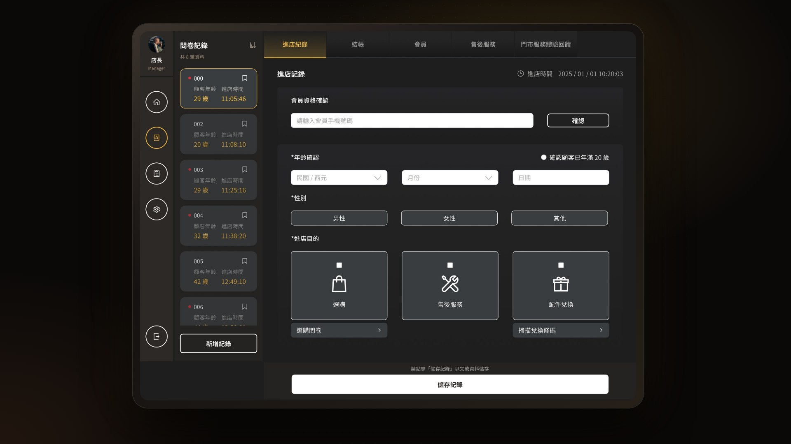
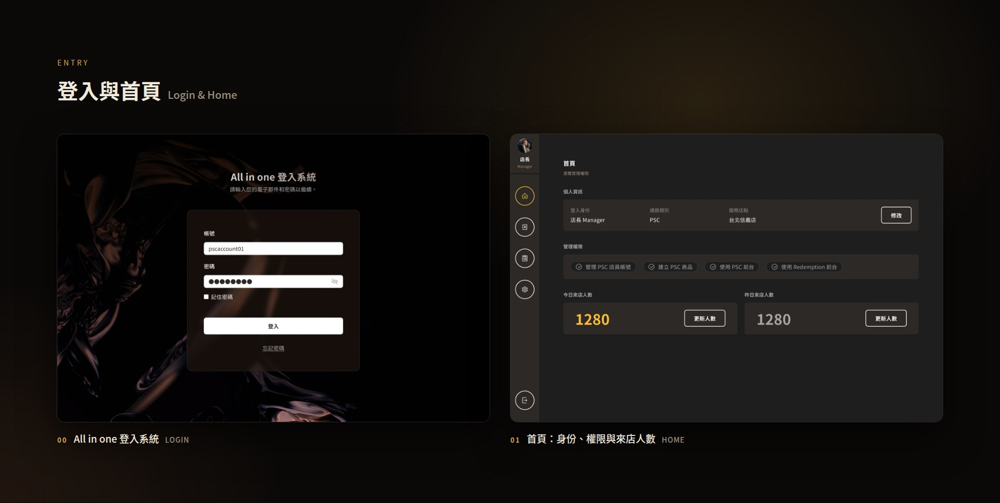
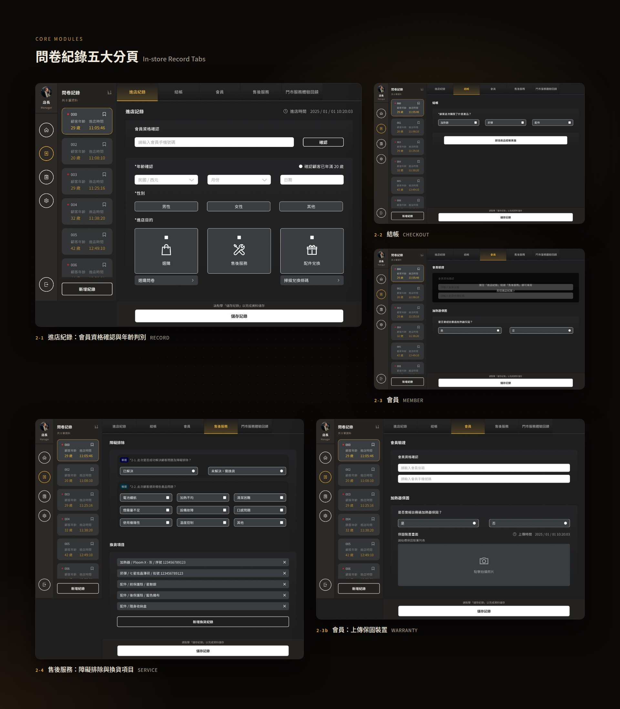
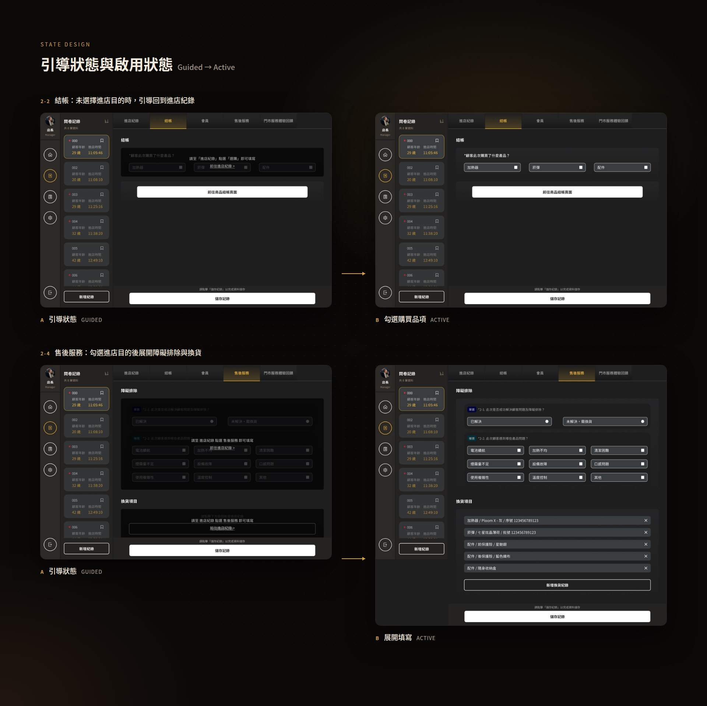
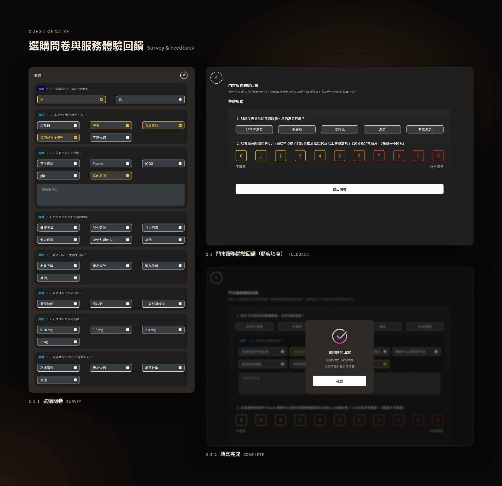
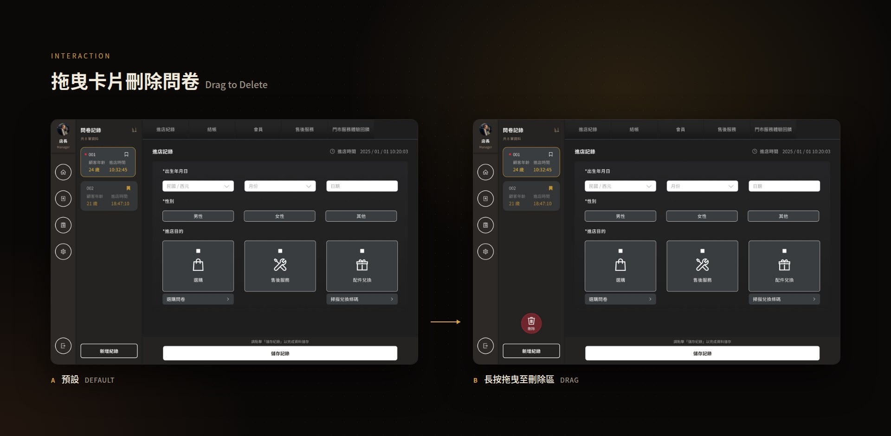

門市的每一次服務，都從店員手上的一台平板開始。All in One 是為 JTI 實體門市打造的店員操作後台：把登入、進店紀錄、結帳、會員、售後服務與服務體驗回饋整合進同一套介面。我負責 UI Lead，將複雜的門市作業轉化為一套沉穩、好上手、在忙碌現場也不容易出錯的操作體驗。
分工｜Team
UX 與 User Flow 由擔任 UX Lead 的 Freddy Liu 負責規劃；我擔任 UI Lead，負責視覺語言、介面架構落地、元件與互動狀態設計，並與開發團隊協作完成交付。
視覺語言｜Visual Language
延續 Ploom 的品牌質感，以深色暖調與金色重點建立沉穩的操作環境；金色只用在當下聚焦的紀錄、分頁與選取狀態，讓店員在門市燈光下也能一眼看見重點。
介面結構｜Layout
左側固定導覽與問卷紀錄清單、右側以五個分頁承接進店紀錄、結帳、會員、售後服務與服務回饋。店員可以在多位顧客的紀錄之間快速切換，不必離開當前頁面。
狀態設計｜State Design
所有分頁都設計「引導狀態」：尚未選擇進店目的時，內容以低彩度呈現並提示回到進店紀錄，避免漏填或跳步；完成前置步驟後才展開可操作的欄位。

Entry｜從登入開始建立信任
登入頁以品牌氛圍影像襯底，降低系統感；首頁則清楚呈現登入身份、通路與服務店點、管理權限，以及今日與昨日來店人數，讓店長與店員一進系統就掌握現場狀況。

Core Modules｜五個分頁，一段完整的服務
進店紀錄整合會員資格確認與年齡判別；結帳以勾選購買品項快速完成；會員頁支援保固裝置拍照上傳；售後服務則將障礙排除與換貨項目模組化，換貨清單可逐項新增、刪除。

State Design｜讓介面替店員記得下一步
每個分頁都有未啟用與啟用兩種狀態。未完成進店紀錄時，欄位降低對比並給出「前往進店紀錄」的捷徑；完成後才展開填寫，讓流程順序自然被介面守住。

Questionnaire｜把問卷變成好點的按鈕
選購問卷以單選、複選標籤區分題型，選項做成大面積的觸控按鈕；門市服務體驗回饋則交給顧客填寫，以滿意度與 0–10 推薦分數收集回饋，送出後以完成畫面收尾。

Interaction｜拖曳卡片，快速整理紀錄
問卷紀錄以卡片呈現顧客年齡與進店時間，長按拖曳至刪除區即可移除誤建的紀錄，減少在清單中層層點選的操作成本。
